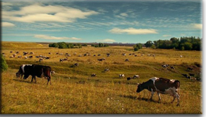
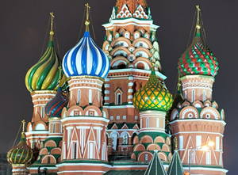
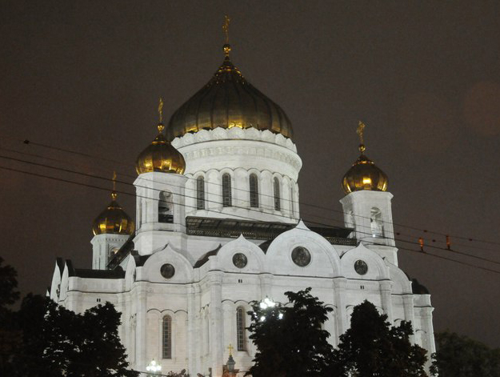
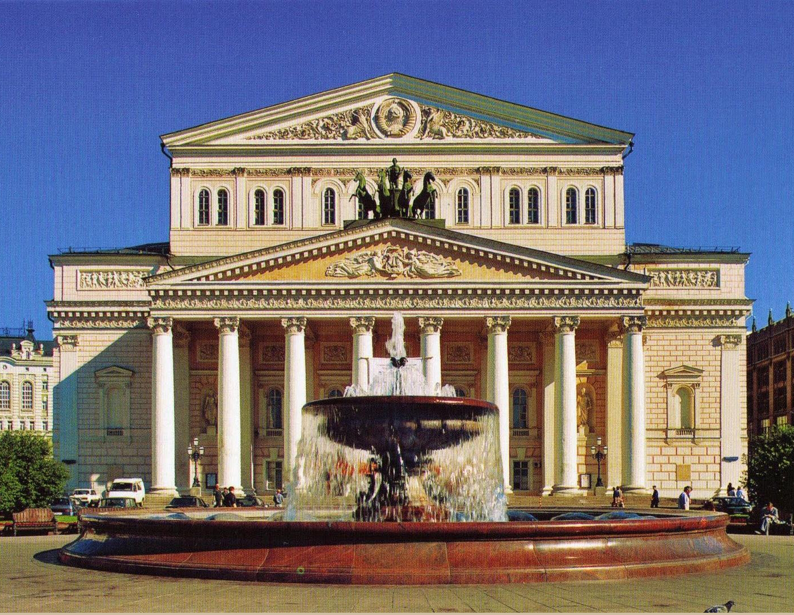
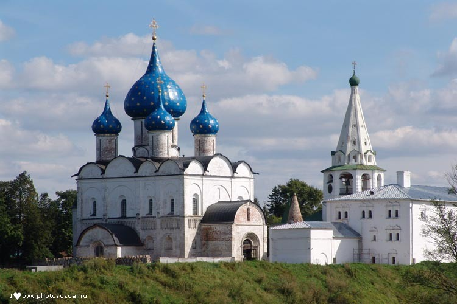
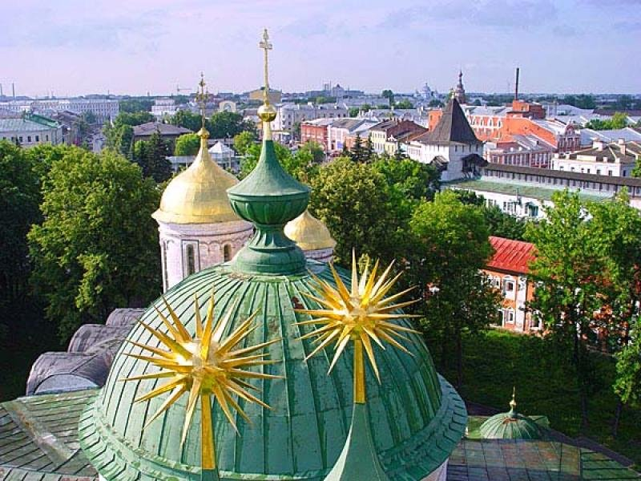
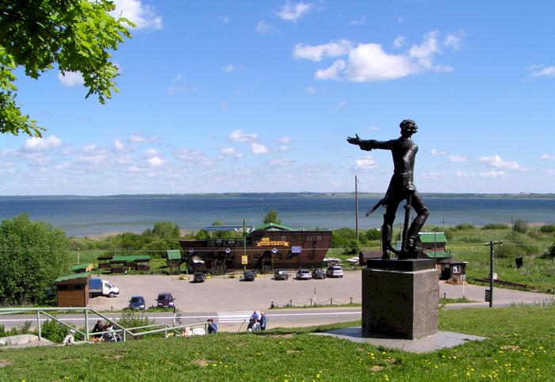
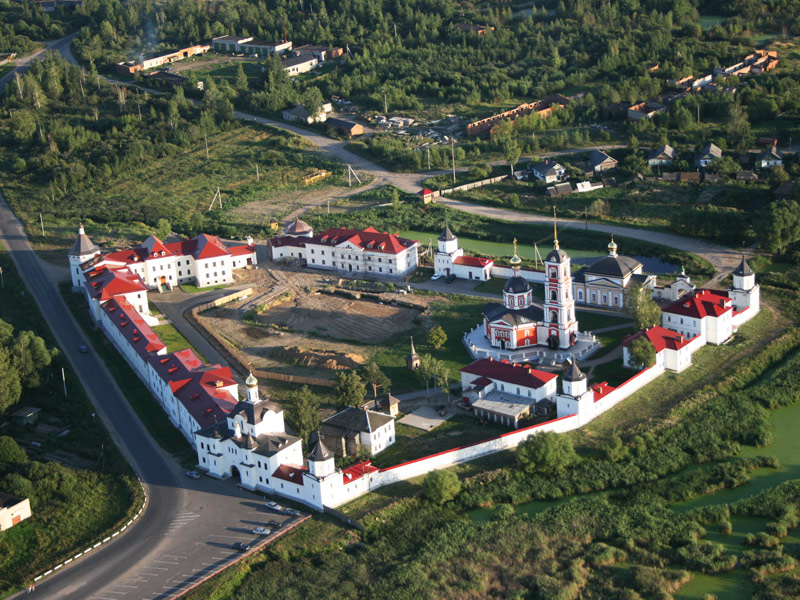
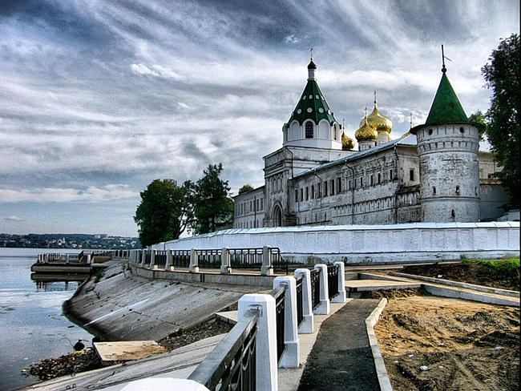

Некоторые люди считают, что интересные места есть только за границей, но это совсем так. На самом деле, чтобы найти прекрасные уголки и открыть для себя что-то новое и неизведанное порой достаточно сесть на автобус или поезд, и совсем не нужен загранпаспорт, виза и разговорник. На просторах нашей Родины есть и холод, и зной, и горы, и степи, и моря, и реки. Культура Росси неповторима, а природные ресурсы настолько разнообразны, что способны удивить даже самого привередливого созерцателя.
Архитектура России прекрасна, нигде в мире не найти таких прекрасных соборов и зданий.
Москва
Перечисление красот нашей великой страны можно начать со столицы. Всем известно, что это Москва. Бесконечно перекрасен этот город, покоривший миллионы зарубежных и отечественных сердец.-

- Храм Василия Блаженного
- Красная площадь
- 
- 
Санкт-Петербург
Неменее известный город России - это Санкт-Петербург, величественная северная столица. Это одино из красивейших мест на свете, а количество интересных мест там невероятно велико. Здесь любой человек, от простого туриста до изысканного искусствоведа, заинтерисуется хоть чем-нибудь. В петербурге есть всё: памятники, сады, музеи, крепости, дворцы, соборы, Эрмитаж, замок.... и еще много-много всего.
5 вещей, которые можно сделать в Санкт-Петербурге бесплатно
Городской путеводитель для экономных. Пригодится и питерцам, и туристам!
1. Погулять по достопримечательностям
Ни для кого не секрет, что для того, чтобы полюбоваться архитектурными шедеврами Санкт-Петербурга снаружи, деньги платить не надо. Однако некоторые ключевые достопримечательности города можно бесплатно осмотреть не только со стороны улиц, но и изнутри.
В первую очередь это, конечно, действующие церкви и монастыри: Казанский собор, Александро-Невская Лавра, Сампсониевский собор, Чесменская церковь и многие другие красивейшие соборы.
Также из «знаковых» мест Петербурга бесплатен вход в Петропавловскую крепость (правда, за вход в собор и во все музеи придется платить) и в Летний сад. В Меньшиковский дворец можно бесплатно попасть в первый четверг месяца. И, конечно, нельзя забывать про недавно открывшуюся Новую Голландию: рукотворный остров, наполненный памятниками архитектуры, динамично превращается в новый культурный центр города.
2. Посетить музеи
Некоторые Санкт-Петербурга открыты бесплатно для всех посетителей. Это, в первую очередь, знаменитый арт-центр на Пушкинской 10, выставочная галерея на Моховой, 18, Музей истории фотографии, Музей-квартира Набокова, Музей метро, Музей Гражданской авиации, Музей Геологического института, клуб-музей "Камчатка".
Кроме небольших тематических музеев и арт-центров, можно бесплатно погулять и по важнейшим музеям города, если знать нужные даты. Так, Эрмитаж бесплатно работает в первый четверг каждого месяца, Кунсткамера – в третий четверг месяца, Зоологический музей – в последний четверг месяца. Музей кукол работает в последний понедельник месяца, Центральный военно-морской музей – в последнюю среду, а Музей религии – в первый понедельник.
3. Покататься на велосипеде
Благодаря новому проекту "Freebike" отправиться на велопрогулку по Петербургу может бесплатно любой желающий. В Таврическом саду и на Дворцовой площади уже появились белые байки, воспользоваться которыми сможет любой горожанин. Правило следующее - взяв бесплатный велосипед и доехав на нём до нужного места, необходимо оставить его там. Далее воспользоваться велосипедом может другой желающий.
4. Сходить в кино
В галерее "Борей" на Литейном, 58, по средам и пятницам киноклуб "Братья Люмьер" устраивает показы авторского кино. Фильмы на языках оригинала, а также экранизации классических произведений зарубежной литературы (также без перевода) можно посмотреть в библиотеке им. В.В. Маяковского на набережной Фонтанки, д. 44.
Также бесплатные кинопоказы бывают в "Буквоеде на Восстания".
5. Послушать орган
В некоторых церквях Санкт-Петербурга можно бесплатно послушать органные концерты – надо только знать время проведения служб. Так, органные мессы проходят
В Евангелическо-лютеранском приходе собора Святого Михаила (каждую среду с 19:00 до 21:00), в Евангелическо-лютеранской церкви Святой Екатерины (по средам и воскресеньям), в Католической церкви Божией матери (каждый вечер в 19.00).
Золотое кольцо России и другие города
Россия велика и необъятна, полна чудес и до конца не изведана. Сколько еще таится на её сибирских просторах, сколько скрывают густые леса и золотистые степи. Множество красивейших городов располагаются по всей нашей Родине. Золотое кольцо России — семейство туристических маршрутов, проходящих по древним русским городам, в которых сохранились уникальные памятники истории и культуры России, центрам народных ремёсел.
-

- Суздаль
- Владимирская область
-

- 
-

- Переславль Залесски
- Ярославская область
-

- Ростов
- Ярославская область
- 
Кириллова Ольга 2013 ©